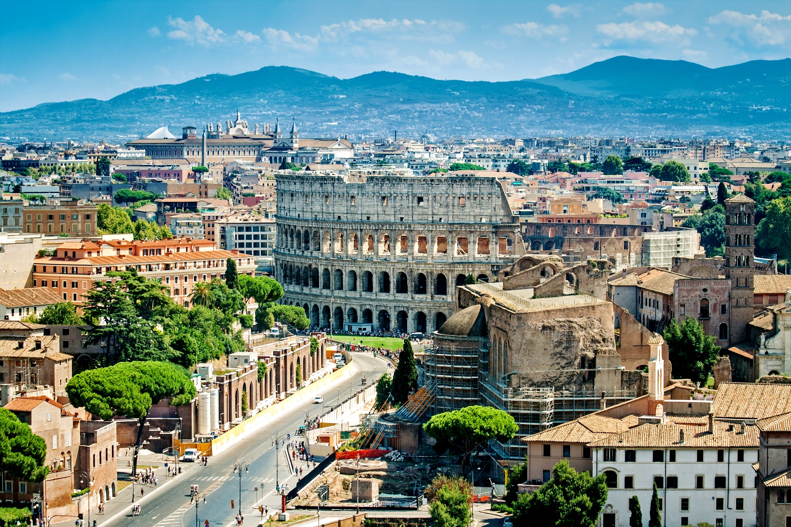
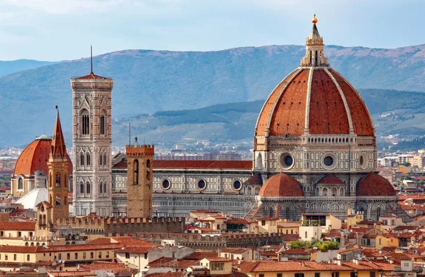
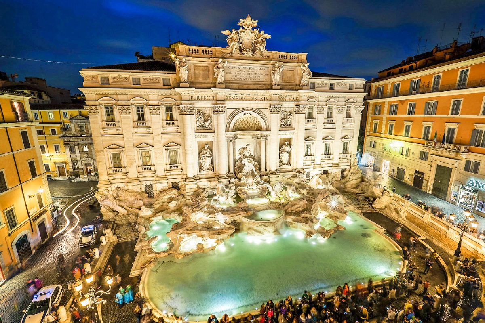

STRONA O ZABYTKACH
RZYM :::: LOS ANGELES :::: SYDNEY
RZYM

Rzym, nazywany „Wiecznym Miastem”, to jedno z najbardziej fascynujących miejsc na świecie, pełne historii, kultury i niezliczonych opowieści. Przez tysiąclecia był sercem potężnego imperium – miejscem, gdzie rodziły się wielkie idee i dokonywały się przełomowe wydarzenia. Rzym powstał w epoce żelaza, jako osada Latynów, usytuowana na szczycie Palatynu. Jego mieszkańcy byli prostymi pasterzami owiec (około 800–750 p.n.e.). Z czasem zajęli się rzemiosłem i handlem z sąsiadami (bogactwo Rzymu pochodziło ze sprzedaży soli pozyskiwanej w salinach u ujścia Tybru).
KOLOSEUM

Nazwa Koloseum nasuwa jednoznaczne skojarzenia z ogromem tej budowli. Trzeba jednak wiedzieć, że ten przydomek przylgnął do tego obiektu dopiero w okresie średniowiecza i nawiązywał do monumentalnego posągu Kolosa Nerona, który stał w pobliżu amfiteatru. Wykonana z brązu rzeźba mierzyła aż 35 m wysokości i była ustawiona na 18-metrowym cokole. Skoro nazwa Koloseum została wprowadzona dopiero w okresie średniowiecznym, jak nazywano ten obiekt wcześniej? W starożytności, nazywano go Amfiteatrem Flawiuszów.
KATEDRA SANTA MARIA DEL FIORE

Uważana jest za jedną z najpiękniejszych katedr na świecie. Katedra Santa Maria del Fiore, czyli katedra Santa Maria del Fiore, dominuje nad panoramą Florencji, dlatego zdecydowanie trudno ją przegapić. Zbudowana została między XIII a XV wiekiem, a jej najsłynniejszym elementem jest niezwykła kopuła, ukończona przez Filippo Brunelleschiego w 1434 roku. Naprzeciwko znajduje się wspaniała baptysterium, słynące z brązowych drzwi z panelami autorstwa Lorenzo Ghibertiego.
FONTANNA DI TREVI

Fontanna di Trevi ma swoje początki w czasach starożytnego Rzymu, kiedy odkryto źródło czystej wody dzięki dziewicy, która, według legendy, wskazała je rzymskim żołnierzom. W 19 r. p.n.e. cesarz Agryppa zbudował Akwedukt Dziewicy (Aqua Virgo), doprowadzając wodę do miasta. W miejscu, gdzie kończył swój bieg, powstała fontanna. Obecny barokowy wygląd to dzieło Niccolò Salvi'ego z XVIII wieku, którego projekt symbolizuje triumf natury i sztuki. Budowę rozpoczęto w roku 1732, po ośmiu latach przerwano z powodów finansowych, aby wznowić w 1740. Co wyjątkowe, Aqua Virgo działa do dziś, przetrwawszy liczne najazdy i kataklizmy przez ponad dwa tysiące lat.